美容系通販 - 弾力感
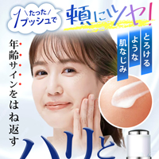
- この動画は、印刷物を前提に解説しています
- 今回は、Photoshopで完成させます（文字等は、Illustratorからのスマートオブジェクト）
素材の準備
- 画像は、ブラウザで表示している画像をダウンロードします（ウォーターマーク付き）
※「無料トライアル」も契約が必須のため今回は、画面から（ウォーターマーク付き）利用します
- 素材例 ←「右クリック：リンク先を別名で保存」
- Free Vectorデータは「ダウンロード」から
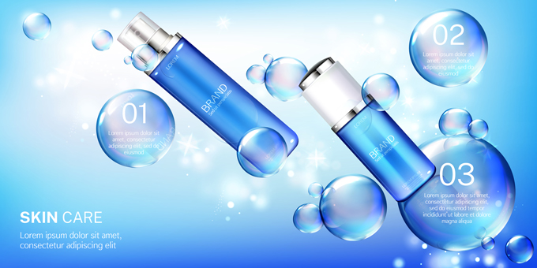
コピー（テキスト）
- 書体は、Adobeの初期設定「小塚ゴシックPr6N」と「小塚明朝Pro」を使用
たった１プッシュで頬にツヤ！
年齢サインを跳ね返す
ハリと弾力感！
肌のキメを整える保湿美容液
とろけるような肌なじみ
・皮膚の水分・油分を補い保つ
・乾燥による小ジワを目立たなく（効能評価試験済み）
・メラニンの生成を抑えシミを防ぐ
完成例
アートボードサイズ
写真切り抜き
- 「オブジェクト選択ツール」で「被写体を選択」
- 「レイヤーマスクを追加」
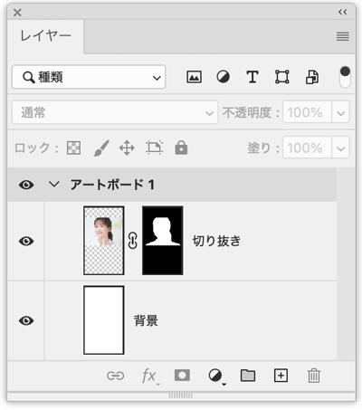
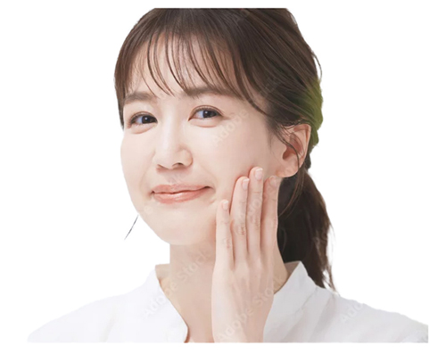
レイヤーマスクを追加
- 顔は「補正」をしてメリハリが出るようにしています
- 顔の上下をぼかす
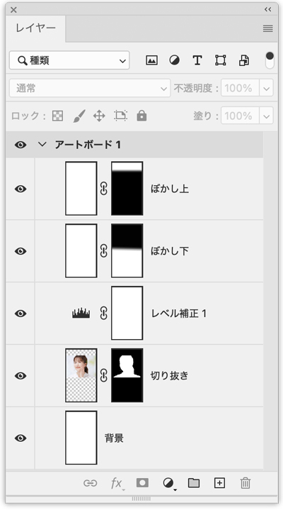
メインコピーを追加
- 基本的には、Illustratorで作成します
- 文字サイズを決めて、書体と微調整は写真に配置後行います（Illustrator初期設定は、小塚ゴシックPr6N）
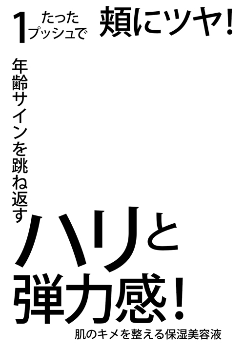
スマートオブジェクトで配置
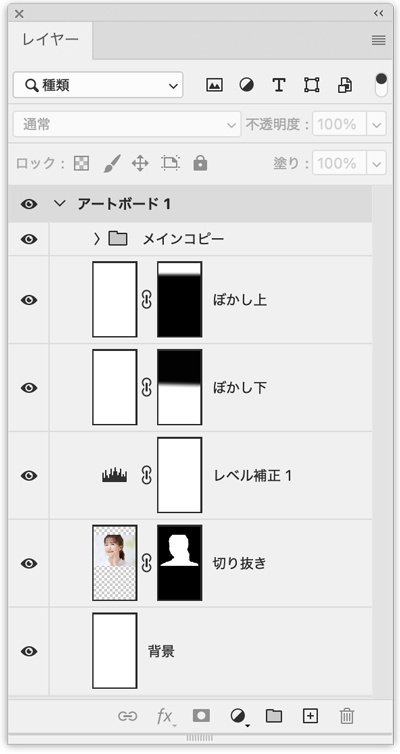
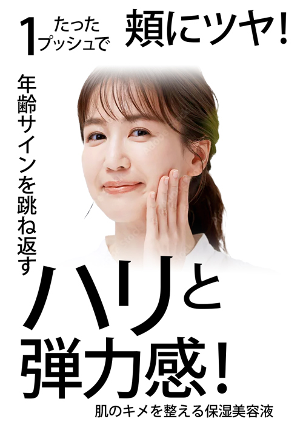
切り抜き写真を配置
- Free Vector画像は、Illustratorから「EPS」画像を開くと画像を別々に選択できます（ただし、バージョンが違うため思ったような作業ができません）
- 今回は「JPG」画像から切り抜きました
- 切り抜き写真は、あらかじめ補正をしておきます
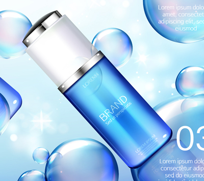
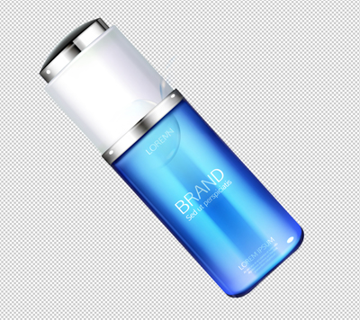
配置写真を微調整
- 顔と商品切り抜きを微調整
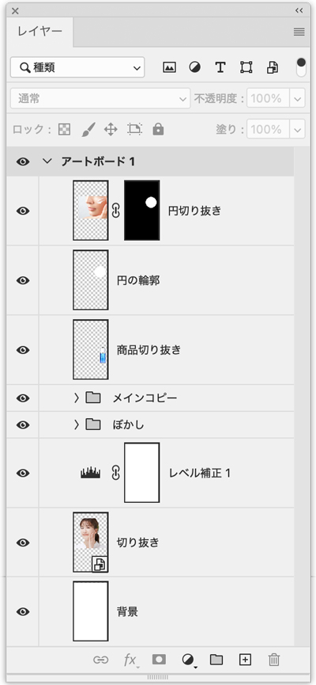
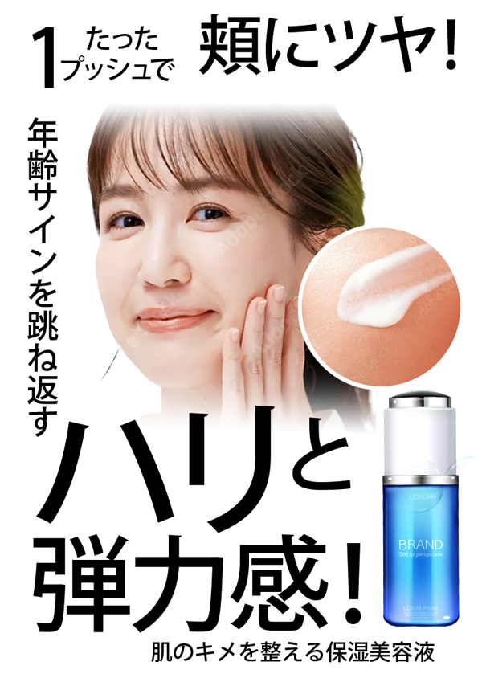
肌の切り抜き写真にコピーを追加
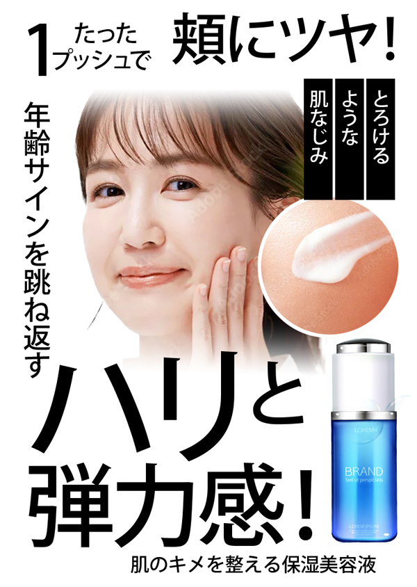
サブコピーを追加
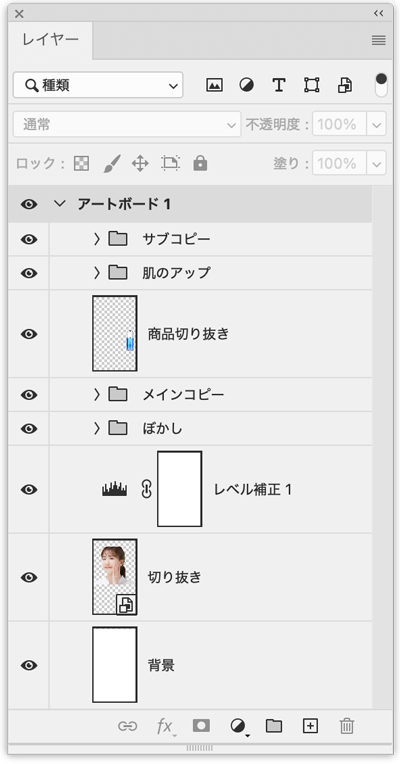
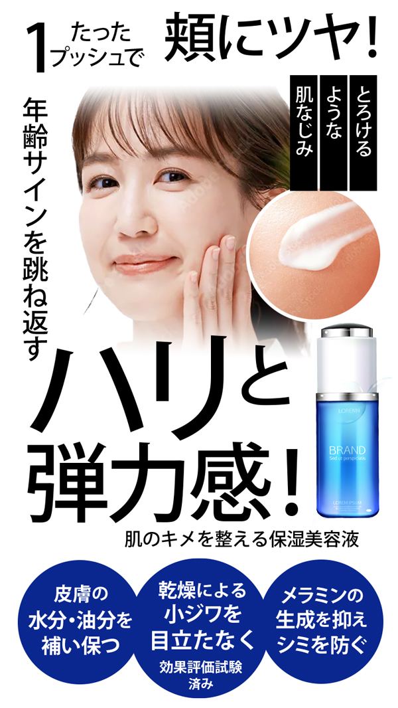
サブコピーの背景を作成
- 泡の表現を以下のように切り抜きます
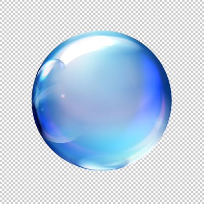
- レイヤー効果で色彩を濃い状態にします
- その後、文字を読みやすく「シャドウ」を追加します
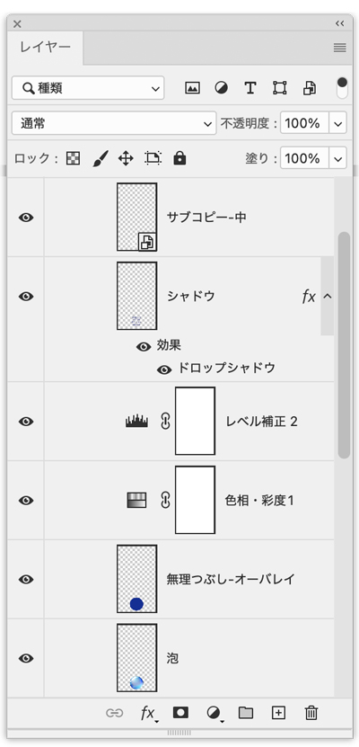
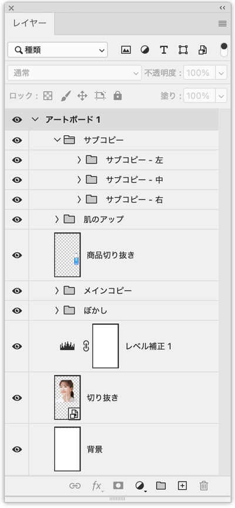
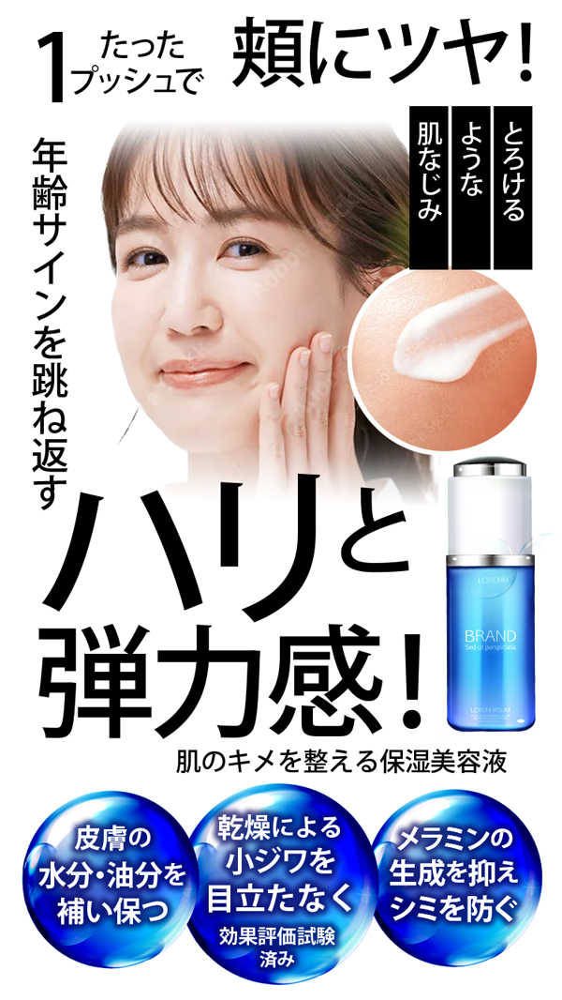
サブコピーの目立たせる部分の色を変える
- 「補色」で設定します
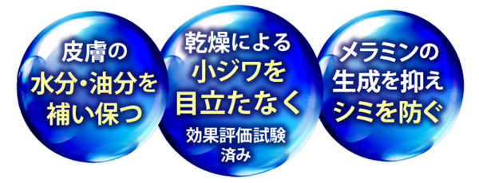
メインコピーを修飾
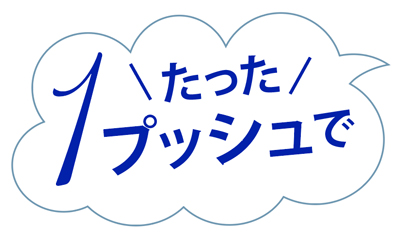
手書き文字の修飾
- 「マカポップ」をアウトラインにして加工しました（見本にある「花とちょう」は、有料です）
- Photoshopで「グラデーション」を設定します
- 「レイヤー効果」→「グラデーションオーバレイ」
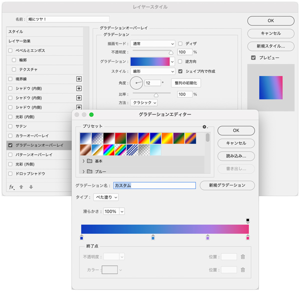
- 「アートブラシ：木炭・鉛筆」で文字の飾りを作成
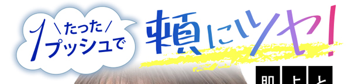
キャッチを修飾
- 文字を立体化（ベベルとエンボス）
- Illustratorでアウトラインをして加工
- Photoshopへペーストした「スマートオブジェクト」を「ラスタライズ」（ビットマップにする）
- ラスタライズしたレイヤーに「レイヤー効果：ベベルとエンボス」を追加
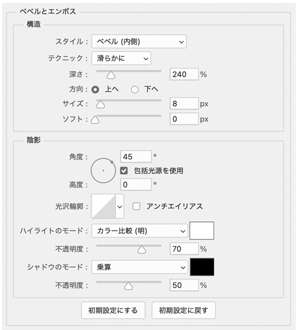
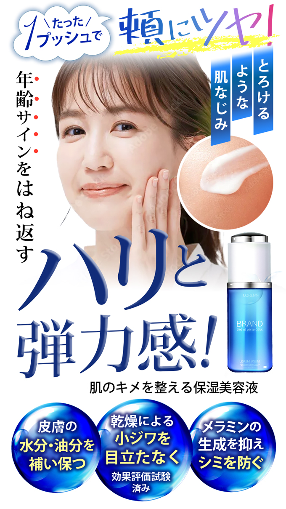
メインコピーの飾り
- 月形の形を作り、別々にスマートオブジェクトで配置
- 手書き文字の「グラデーション」を「レイヤースタイルをコピー」
- 「レイヤースタイルをペースト」で適用させる
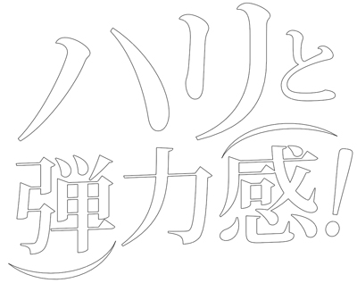
- 顔の切り抜きのときに選択していた「顔の後ろにある髪」を削除しました
背景画像を配置
- 背景画像を表示するために、顔の白いぼかしを選択範囲に変換して削除します
- 背景画像の最下部のみをレイヤーマスクを追加して白く見せます
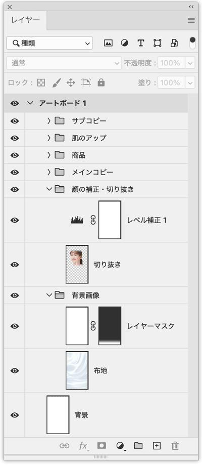
キャッチコピーの補足
- 白いシャドウを追加して読みやすくします
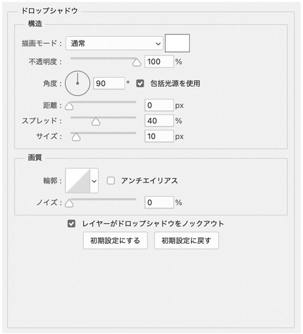
完成
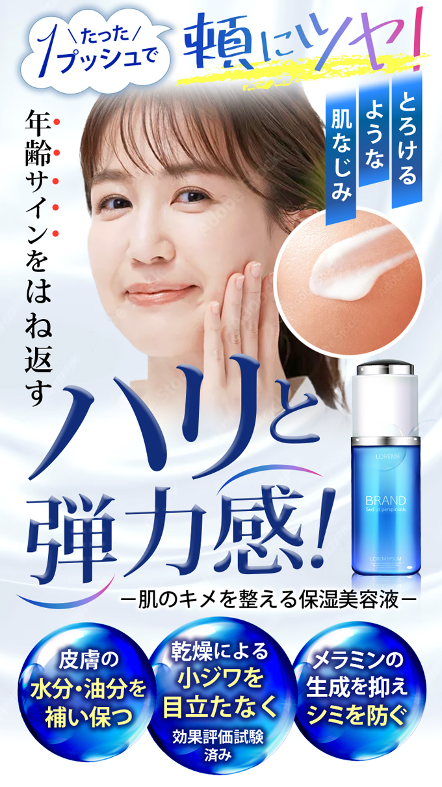
- 「枠線」を追加した場合